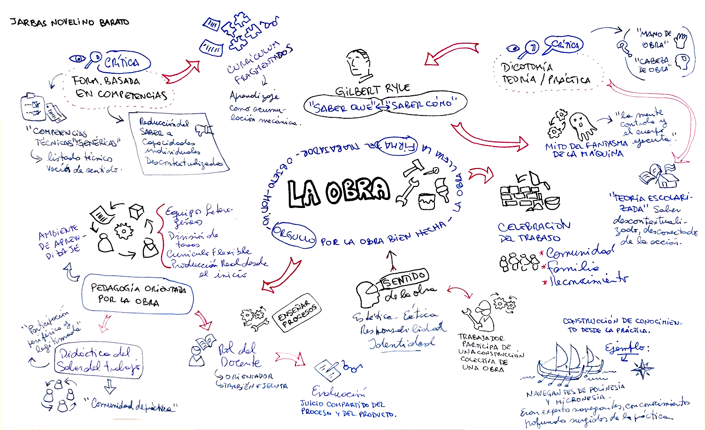

Trabajo, Conocimiento y Formación Profesional
Jarbas Novelino Barato. Capítulos 1, 2 y 3.
 audio
audio  resumen
resumen
Foro de Clase 06
¿Qué dice Barato en este video?  video
video
A la cámara:
El profesor trabaja organizando la información para que las personas aprendan, y ya hace eso. Cuando se enfrenta a nuevas tecnologías, el desafío para él es cómo integrar esas nuevas tecnologías en un trabajo que ya sabe cómo realizar. El gran problema que existe en relación con esto es la idea, que muchas veces predomina, de que la tecnología es algo que está dentro de herramientas, equipos y sistemas. Yo tengo una forma de pensar un poco diferente: es como si fuera una fórmula matemática en la que digo que tecnología es igual a herramienta más imaginación para abrir caminos.
En la clase:
Hay un tipo muy inteligente que está publicando solo micro-libros porque cree en lo siguiente: él es profesor en la Universidad PUC y, si Dios quiere, va a interactuar con sus alumnos. Él pone un libro así sobre la mesa, y si el libro se mantiene en pie, el alumno tal vez lea. Pero si pone varios libros, no se sostienen en pie. Es decir, la "biblia" de 50 páginas tal vez sí la lean. Así que Gustavo Athayde, Tânia y yo mismo publicamos libros de 20 páginas como máximo, ¿ven? Para que se puedan leer en una noche de lluvia, cuando uno no tiene mucho que hacer. Están escritos para ser realmente leídos, no en lenguaje académico ni nada por el estilo. No es esa forma de hablar que dice “considerando las posibilidades de uso de la tecnología en la educación”. No. Es una conversación directa. Intento hablar con el profesor en un lenguaje de personas, que es lo que somos nosotros.
Lo que hacemos los profesores es generar un poco de incomodidad, pero nunca demasiada. Es decir, la justa medida: nuestra obligación no es traer certezas, sino dudas. Que las personas se comprometan a intentar resolver las dudas que les presentamos. Además, un libro tiene que permitir resolverlas, no hay que exagerar: si lo hacemos muy difícil, la persona se desanima. Pero si lo hacemos demasiado fácil, la persona piensa “esto no es para mí, porque no soy tonto”. Hay que encontrar la medida justa.
Foro:
Con respecto a la primera parte del video, cuando el autor dice que prefiere pensar que la tecnología es igual a "herramientas más imaginación para abrir caminos", me parece interesante, porque incluye a la imaginación humana como protagonista y partícipe de la tecnología. La tecnología suele asociarse a algo sofisticado, artificial, externo o extraño. Pero no tiene que ser así. En realidad, la tecnología solo existe en función del ser humano. Si nos remontamos al origen de la tecnología, esta comienza cuando empezamos a utilizar herramientas. Al principio eran herramientas simples, como piezas metálicas sencillas, como un cuchillo, pero usadas inteligentemente, en forma responsable y a nuestro favor, siempre fueron en beneficio del ser humano. Así fuimos haciendo esas herramientas cada vez más complejas, hasta llegar a los dispositivos tecnológicos actuales, que son mucho más sofisticados. Sin embargo, el origen de todas las tecnologías es el mismo. Y en toda la evolución de estas tecnologías, siempre fueron útiles o no en función del humano que las utiliza. Por lo tanto, una tecnología educativa sofisticada, como una tablet, un celular o una computadora, puede ser muy útil o no, dependiendo del humano que las usa. Por eso el factor humano es importante en la ecuación. Lo importante es qué hacemos con ellas, cómo las usamos. Una inteligencia artificial es una tecnología sofisticada, tal vez la más sofisticada que conocemos, pero tiene el mismo origen que todas las demás. Si es bien utilizada, con imaginación, en forma responsable y a nuestro favor, también puede abrir caminos.
La segunda parte del video habla de un fenómeno creciente, que es la dificultad para la lectura, fenómeno en el cual me identifico. Yo sería uno de esos alumnos que lee el libro si tiene solamente 20 páginas o menos. Sin embargo, eso no significa que no sea capaz de conocer, explorar, investigar e indagar a través de nuevas formas de "leer" o acceder a fuentes de información, de reflexionar sobre lo que conozco y también de construir conocimiento. Puedo digitalizar un libro y convertirlo en audiolibro utilizando un software, o formar parte de una comunidad en línea que crea videos comentando el contenido de los libros, o que hace podcasts profundizando sobre los temas. Entonces, la misma información que antes solo podía estar en papel ahora se puede representar en otros formatos, recrear y ser más accesible. Yo creo que el autor no debería limitarse a escribir solamente libros de 20 páginas; podría seguir escribiendo libros de 500 páginas, solo que habría que pensar en alternativas para usar nuevos formatos multimedia para el libro: no solo el libro digitalizado en PDF, sino también audiolibros, presentaciones con esquemas y mapas conceptuales, series de podcasts en capítulos, o videos de pizarra blanca con dibujos estilo doodle. No se trata de la muerte del libro, sino de la existencia del libro en múltiples y nuevos formatos.
